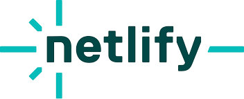
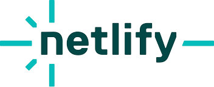
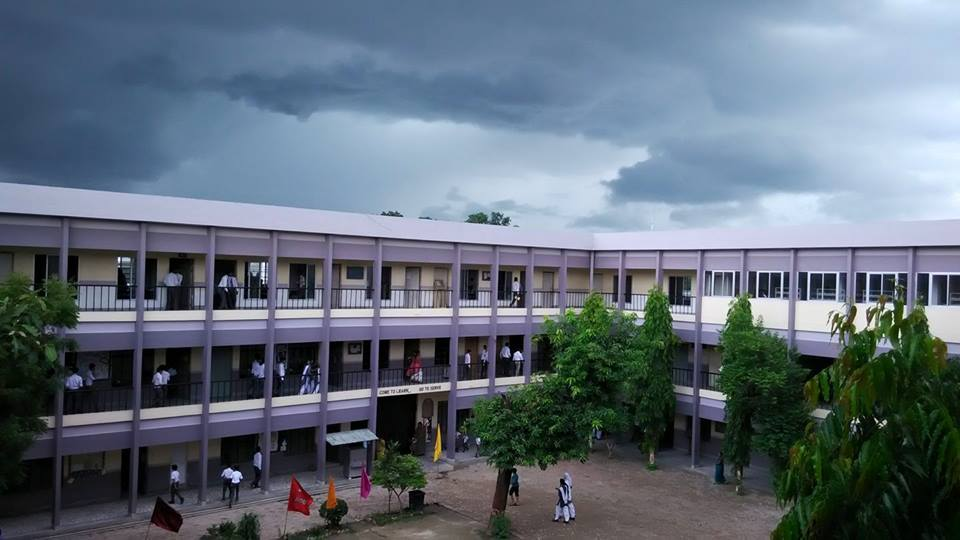
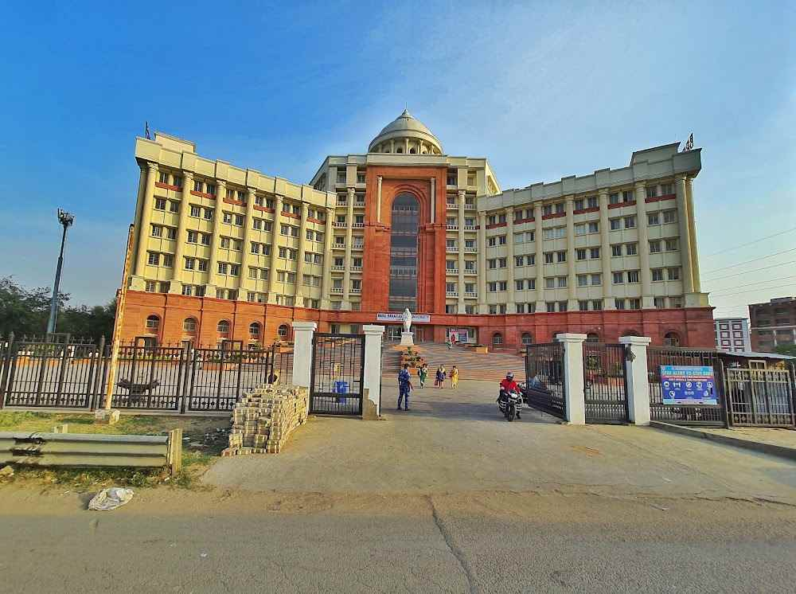

Skills , Technologies and Tools
 

Intermediate
After completing my High School in 2021, I enrolled in the Intermediate program in Radiant Central Children Academy from CBSE Board. It is typically the final year of secondary education before students transition to higher education or professional careers. The significance of class 12th lies in its role as a gateway to future opportunities and its impact on a student's academic and professional trajectory.


Bachelor's
After completing my Intermediate in 2023, I enrolled in the Bachelor of Computer Application (BCA) program in Data Science & Artificial Intelligence at Babu Banarasi Das University. Currently pursuing this degree, I am set to complete it in July 2026. Throughout my BCA program, I have delved into advanced programming languages, mastered Data Structures and Algorithms (DSA), explored the intricacies of web development, ventured into Android development, and engaged with concepts of Artificial Intelligence (AI) and Machine Learning (ML). This comprehensive curriculum has equipped me with a diverse skill set and positioned me to thrive in the ever-evolving landscape of Information Technology.